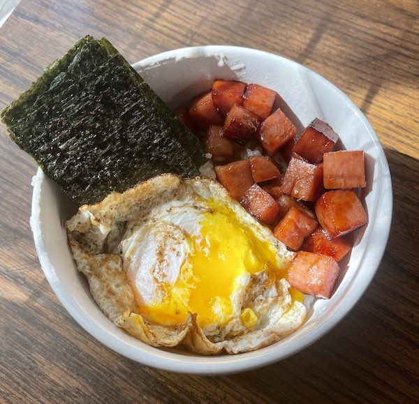

Spam Musubi Bowl

Spam Musubi Bowl
Spam Musubis are one of my favorite snacks to eat, and this bowl takes them a step further in my opinion. The addition of the egg
is well worth taking away the convience of the on the go musubi.
Ingredients
- Spam
- Rice
- Soy Sauce
- Oyster Sauce
- Sesame Oil
- Nori
- Egg
- Salt & Pepper
Steps
- Rinse your rice until the water is clear, then cook your rice.
- Mix the soy sauce, oyster sauce and sesame oil in a bowl.
- Dice your spam into bite sized pieces and place in a bowl with the combined sauces.
- When your rice is about half way done, crisp up your spam in a little bit of sesame oil.
- When the spam is done, cook one egg over sunny side up.
- When your rice is finished, place in a bowl, stack some spam on the rice, then add your egg on top.
- Optional: Add some Furikake on top of the bowl and enjoy with some nori.
Home